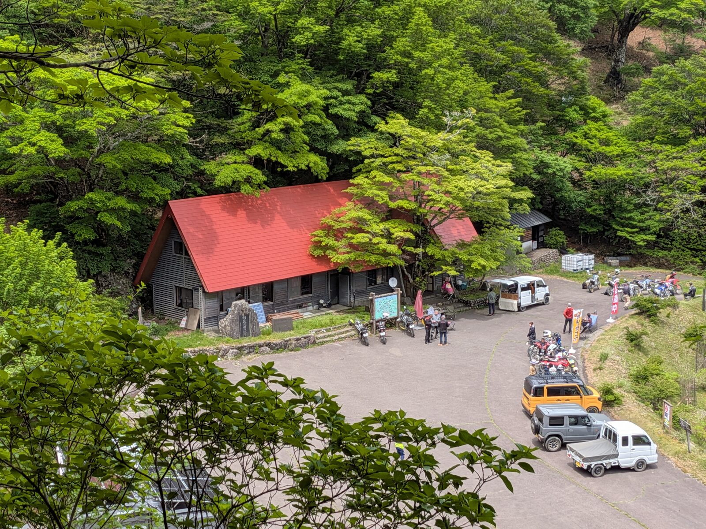
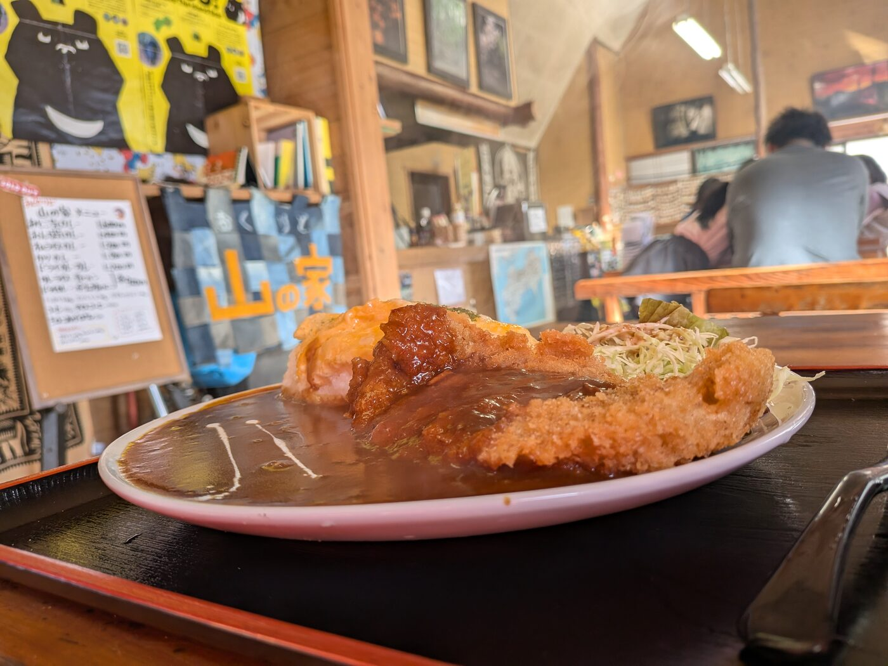
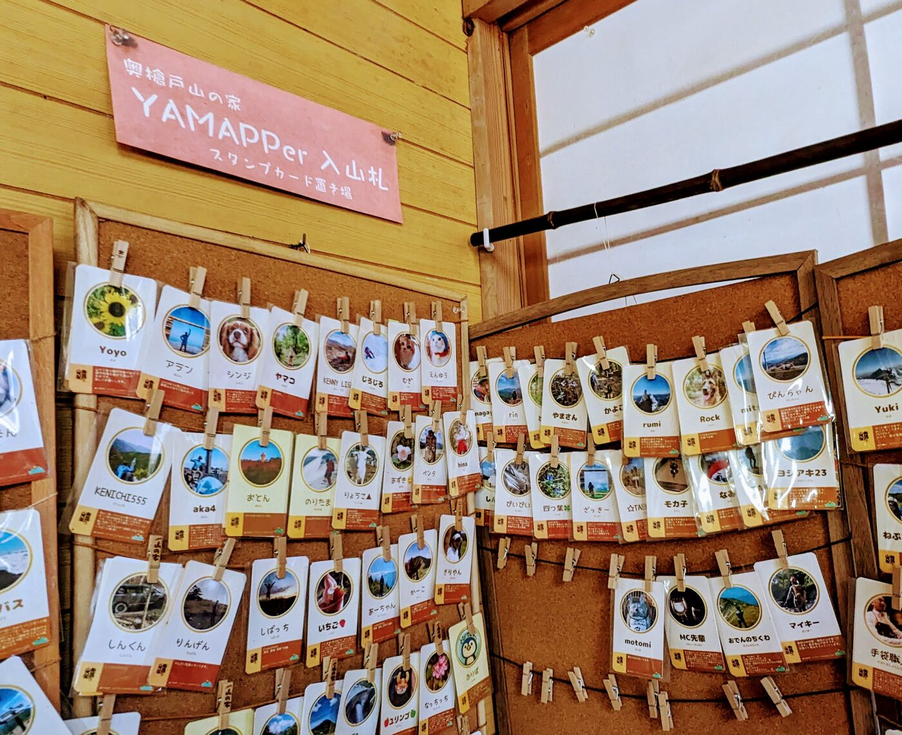
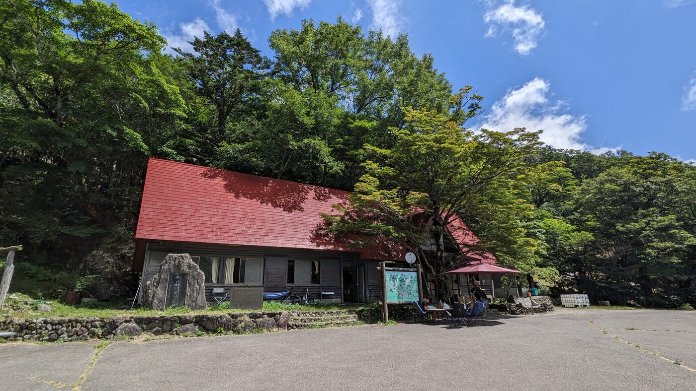
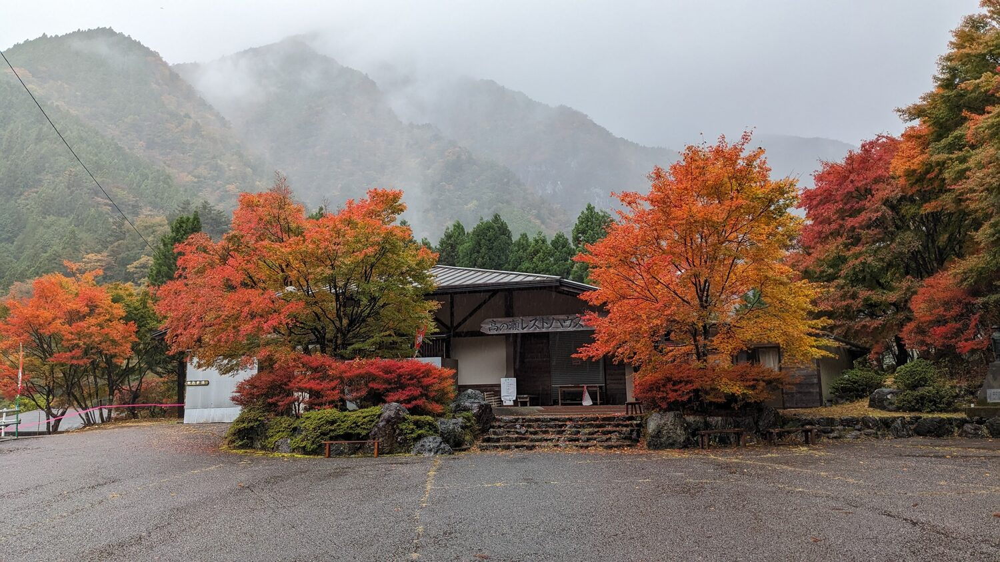
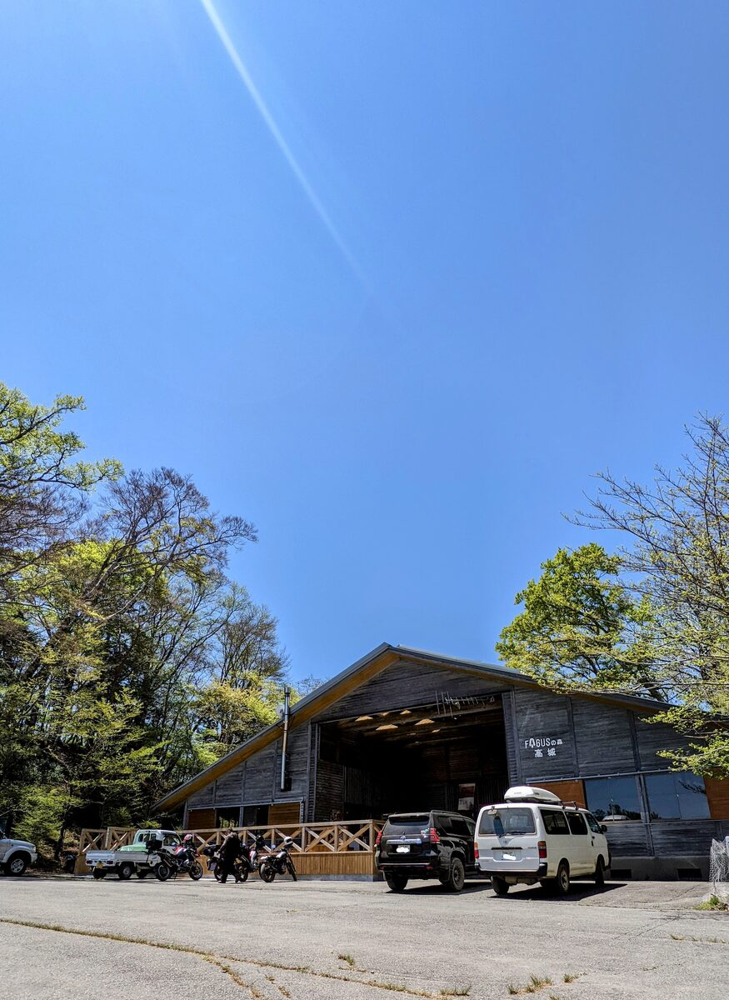

道路・林道
とくしま林道ナビで、通行止め・注意情報・区間情報を確認してください。Google Mapだけで判断しないことが大切です。
奥槍戸山の家、平の里、ファガスの森 高城。剣山系・剣山スーパー林道周辺を訪れる前に、立ち寄り拠点と道路状況、安全確認をまとめて確認できます。
このページは、奥槍戸・木頭・剣山スーパー林道周辺を訪れる方のための入口です。実際の通行可否・規制・道路状況は、天候や災害、落石、倒木、積雪、凍結、工事などにより日々変わります。
掲載情報だけで判断せず、出発前に必ず外部リンク先で最新情報を確認してください。特に山間部の林道や町道は、地図アプリ上では通行できるように見えても、現地では規制されている場合があります。
このページは入口です。出発前には、必ずリンク先で最新情報を確認してください。安全な計画が、楽しい山の時間につながります。



「行けるかどうか」だけでなく、「安全に戻れるか」を基準にしてください。
とくしま林道ナビで、通行止め・注意情報・区間情報を確認してください。Google Mapだけで判断しないことが大切です。
山間部は天候が急変します。雨・霧・強風・雷に注意し、日没前に余裕を持って戻れる計画にしてください。
タイヤ、ブレーキ、ライト、燃料を確認してください。未舗装・荒れた路面に不慣れな方は無理をしないでください。
登山届、地図、登山アプリ、雨具、ヘッドライト、行動食、水、モバイルバッテリーを準備してください。

無理して進むより、引き返す判断のほうが大事なときもある。山では安全第一だぜ。
運営主体や営業時期が異なるため、来訪前に各施設の最新情報を確認してください。

剣山系・奥槍戸方面を訪れる登山者、バイカー、地域の人たちが立ち寄る、阿波山雅のメイン拠点です。
食事や休憩だけでなく、山や林道の情報が集まり、人が出会い、次の活動が生まれる場所として育てていきます。
よう来てくれたね。山道、疲れたでしょう。まずは少し休んでいってね。

那賀町木頭エリアで、自然や地域の暮らしに触れられる連携拠点です。
奥槍戸山の家とあわせて、季節や行程に応じた立ち寄り先として紹介します。営業状況は来訪前に確認してください。
木頭の自然や暮らしを感じるなら、平の里にも立ち寄ってみるとええぞい。

剣山スーパー林道周辺をめぐる方にとって、休憩・宿泊・周遊計画の参考になる施設です。
地元団体が運営しています。営業日・営業時間・料金・予約方法などは、必ず公式情報をご確認ください。